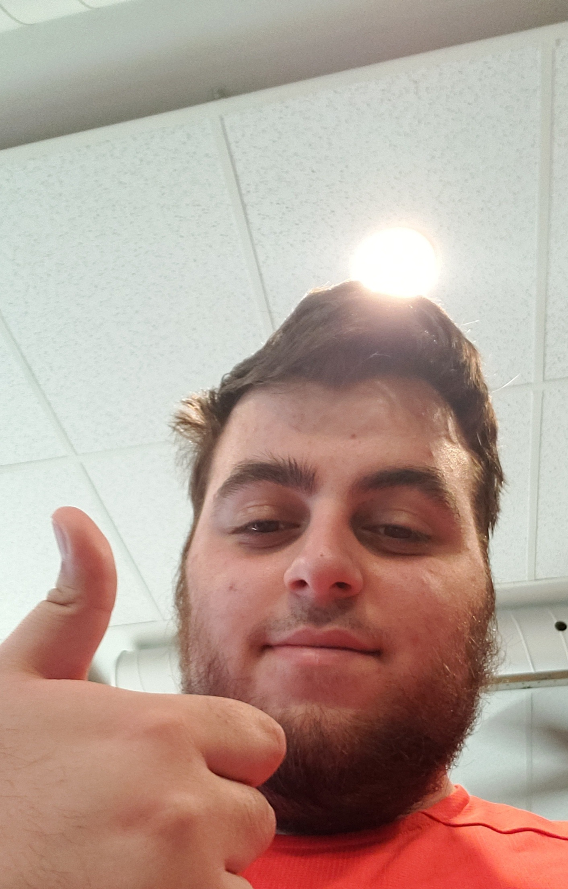
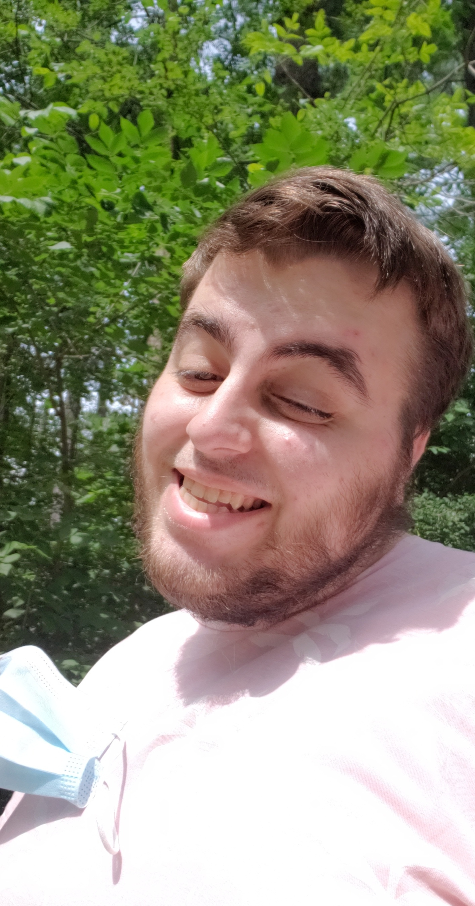

I’m 21 years old and I am 5’8, I live in a family of 5,
the youngest boy of 3 sibling in a small town called Russell.
My favorite food is sushi, especially the sticky rice with a piece of raw salmon on top
and my favorite drink is Mug Root Beer.
I have 1 older bother who is 4 years older than me and 1 older sister who 8 years older than me.
My sister is now married and lives in Ottawa. My birthday is November 4th and I was born on 1999.
I work for my dad at the restaurant he owns called the R&R.
"Death is never an apology" - Brook, 'One Piece'
 Hobbies